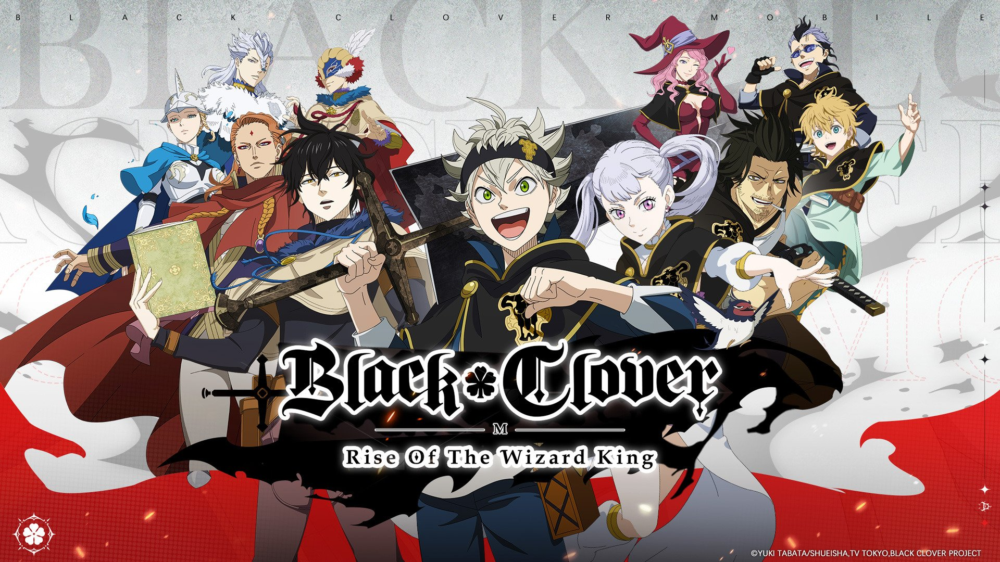
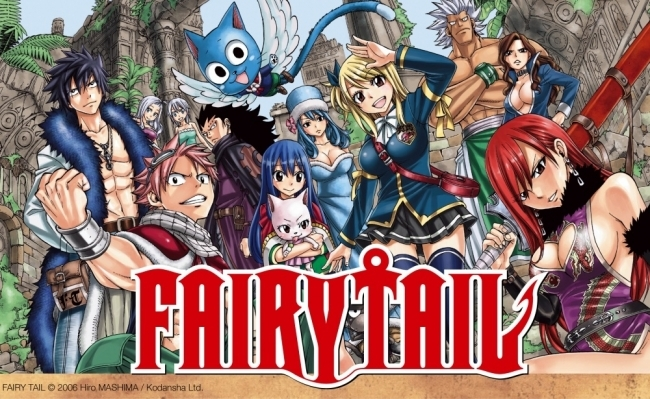
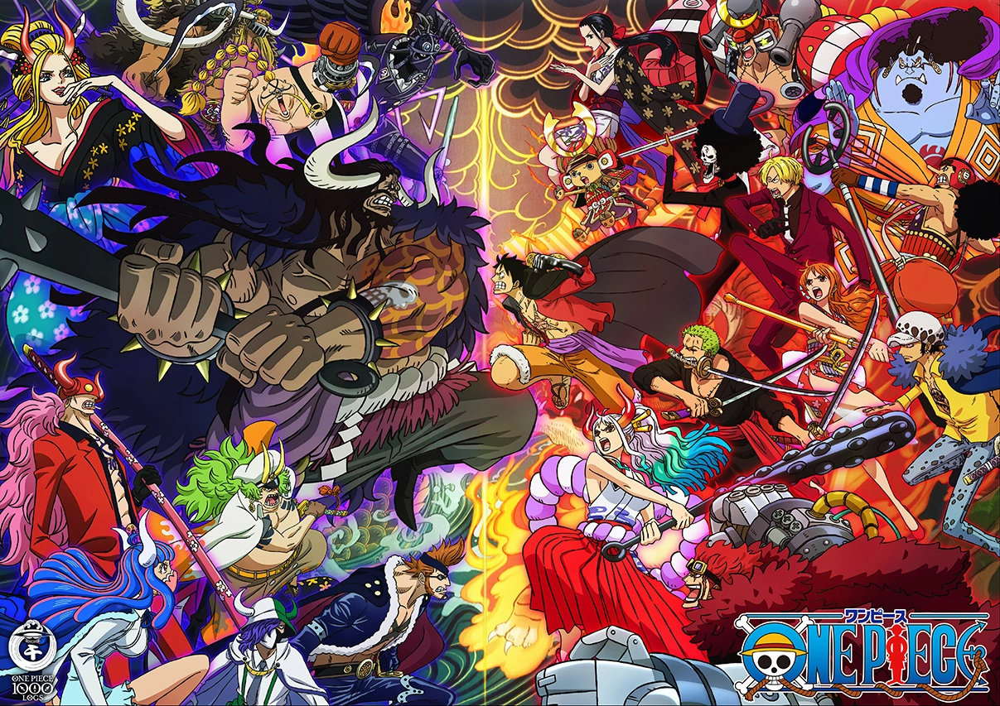
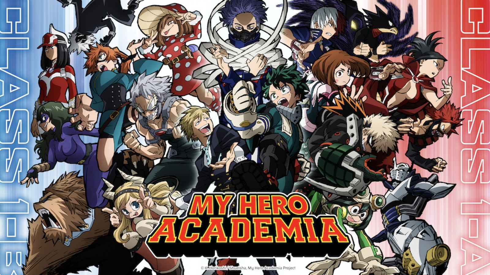

Black Clover
Black Clover is about a world where it is normal to possess magical power and the powerless are shunned by the society. The source of their power is a magical book called "Grimoire" and it dictates the unique power they have. The main character named "Asta" gets ridiculed his whole life because he didn't show a sign of magical power until the distribution of the grimoires. He is a cheerful type of guy that doesn't give up easily even before when he was powerless.
The grimoire he later got turned out to be one of the rarest and most potent grimoire in history. His goal throughout the series is to become the "Magic Emperor" which is a kingdom's greatest magic user. The fight scenes in this anime is truly one of the most entertaining to watch, the fight is continuous and doesn't waste time in too much talking.
Naruto

Naruto is an adventurous anime that pertains to ninjas having their own designated villages. It features a variety display of power, it does not revolve around to shurikens and kunai only. The main character "Naruto" has a spirited personality despite not having any parents and being discriminated in all throughout childhood.
The scaling of power in this anime is primarily in terms of chakras and jutsus. Naruto has a very complex story that includes a lot of category like drama, romance, tragedy, comedy, and a whole lot more. Naruto's main goal is to become a "Hokage" which is basically equivalent to the ruler of a certain village. This show will truly reach your hearts out and ignite the ninja spirit residing within you.
Fairy Tail
Fairy Tail is a venturesome anime that is about magical powers and guilds. Magic is abundant in their world and their magic comes in different forms. The magical powers does not only revolve around elements rather they have unique powers like time, shapeshifting, weapons, and more. The main character named "Natsu" is a vigorous and a little tempered type of guy. Natsu's power is fire due to a dragon's power residing inside him.
His main and original goal throughout the anime is to find Dragneel that is a dragon in which he treats like his own father. The anime shows the importance of power of friendship and to highlight that killing is not always necessary to the enemy. This show will exhibit a lot of variety of magic and a lot of magical places.
One Piece
One piece is an adventurous anime in which the main character named "Luffy" goes on a long adventure. Luffy is an energetic person that sets to travel the world by the seas to find the treasure "One Piece". He has a persevering spirit and has an elastic power to defeat his opponent using his devil's fruit power called "Gomu Gomu no Mi". He has a friendly ambience that befriends almost everyone even the enemies.
He aims to be the "Pirate King" which is the greatest title to ever exist in their world. This anime is mainly about pirates, marines, and different type of creatures clashing against each other. The main character is not the only interesting person but even the side characters are. The backstories and the build up in the story is truly one of the most remarkable characteristics in this show.
My Hero Academia
My Hero Academia is a magic school oriented anime which is initially about competition and ultimately about fighting actual villains. It mostly circulate about powers called "Quirks" and these are different abilities that come in different manifestation. It has a variation of abilies like power boost, body transformation, element manipulation and other more.
The protagnist named "Deku" is a young boy who was initially mocked because he did not show any inidication for manifestation of quirks. It is until a powerful and prominent man named "All Might" passed his power unto him after deeming him worthy of his power called "One for All". This anime will display the result of hard work and patience that results into a lot of achievements.
Anime Connects is recommendation of similar anime, characters, plots, and even openings. This shall help
you find more anime that fits to your liking and standard
The chance of anime getting feature does
not rely on popularity on its selection of feature so even underrated anime are welcome.